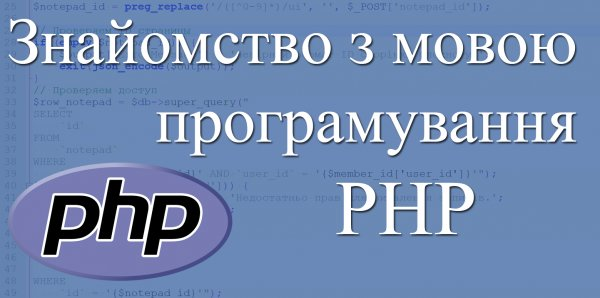

Що являє собою PHP?
За допомогою серверної мови програмування PHP можна створювати майже будь-якої складності вебсайти, що працюють на тисячах серверів по всьому світу. Починаючи з самого початку зародження Web, PHP невпинно розвивається та притягує до себе величезну кількість програмістів, що надає їй дуже велику популярність та залишає у верхівці рейтингу найбільш вживаних мов програмування у світі.

На відміну від перших версій РНР, у яких об’єктно-орієнтований підхід довго залишався альтернативою для традиційного процедурного підходу, нові версії РНР практично повністю призначені для об’єктно-орієнтованої розробки. Сьогодні ООП є невід’ємною складовою сучасних РНР-додатків, оскільки все більше розширень використовують об’єктно-орієнтований інтерфейс, оформлення компонентів у вигляді класів, РSR-стандарти і сучасні фреймворки диктують розробку, повністю орієнтовану на об’єктно-орієнтований підхід.
Традиційно, при знайомстві з будь-якою мовою програмування необхідно ознайомитися з її перевагами та недоліками.
Переваги PHP
👍 Web розробка. В більшій мірі мова програмування PHP створювалася та підтримується як мова, орієнтована для розробки вебсайтів. Конструкції мови розроблені для зручності роботи у Web середовищі.
👍 Багатоплатформність. РНР працює практично на всіх популярних операційних системах, тому не виникне проблем при розробці та перенесенні проєктів.
👍 Безкоштовність. Мова програмування РНР є повністю безкоштовна. Крім того, не потрібно платити за більшість додаткових редакторів, серверів та баз даних, з якими вона працює. Значна кількість програмних продуктів будуть мати доступний для вивчення і модифікації вихідний код.
👍 Легкість вивчення. Вивчити РНР і почати створювати готові програми не складе великих зусиль, у порівнянні з її конкурентами, такими як .NET, Python, Ruby тощо.
Недоліки PHP
👎 Відсутність лідера. Комерційні технології мають, так би мовити, свого лідера, архітектора, який визначає вигляд та напрямок розвитку технології. У РНР лідера немає, багато рішень і конструкцій - це компроміс зацікавлених груп та історично сформованих реалій.
👎 Відгук з минулого. Мова програмування PHP доволі не молода, і пройшла дуже нелегкий шлях розвитку, яким можна характеризувати створенням та видаленням ключових слів, директив, конструкцій, котрі мають доволі неоднозначний характер. Наприклад, деякі конструкції ніби є, але ними не рекомендується користуватися. Те ж саме стосується директив, які на перший погляд повинні були полегшувати розробку, а на практиці оберталися серйозними проблемами безпеки.
👎 Роз’єднана спільнота. РНР - це одна з перших технологій для розробки вебпроєктів, за допомогою якої створена більша половина Інтернету. У розробку РНР одночасно було залучено величезну кількість програмістів по всьому світу, що в свою чергу породило величезну кількість різних підходів, фреймворків і несумісних екосистем. З часом з’являються альтернативні реалізації РНР, що призвело до несумісності екосистем всередині РНР, а співтовариству необхідно витрачати значні сили на створення одних і тих же бібліотек в рамках різних груп. В деякій мірі ситуація виправляється за допомогою РSR-стандартів, які описують єдині правила та інтерфейси, що забезпечують сумісність фреймворків, але цей процес ще на початку шляху, в той час як технології конкурентів (.NET, Ruby) вже мають єдину платформу для всіх фреймворків.
Cтруктура РНР
Мова програмування РНР складається з ядра та розширень. Між ядром і розширеннями доволі складно провести межу, оскільки багато розширень включені до складу ядра або поширюються у вигляді легко встановлюваних скомпільованих бінарних бібліотек.
Створений програмістом PHP код можна умовно розділити на наступні типи:
🛠 Компоненти - являють собою бібліотеки на РНР, які збираються за допомогою менеджера пакетів Composer;
🛠 Фреймворки – тисячі готових збірок, часто з компонентів, за допомогою яких можна створювати вебсайти будь-якого ступеня складності.
🛠 Готові програми - готові до використання розробки на РНР. Це системи управління контентом CMS, вебінтерфейси управління базами даних (phpMyAdmin).
Супутні технології
PHP дозволяє швидко розробляти вебсайти, однак для запуску буде потрібне додаткове програмне забезпечення і технології:
⚙️ Вебсервер. Програма, яка забезпечує взаємодію клієнта і вашої програми за допомогою протоколу НТТР. В більшій мірі для експлуатації вебсайту буде вистачить вебсервер Nginx або Apache. Встановлення вебсерверу не створить труднощів, оскільки в мережі Інтернет ви з легкістю зможете знайти його встановлення на всі відомі платформи. Встановлення вебсервера Apache 2.4 з модулем PHP 8 та бази даних MariaDB.
⚙️ Сервер бази даних. Для збереження даних використовуються сервери баз даних, яких сьогодні існує дуже велика кількість. Кожна окрема база даних заслуговує на окрему книгу.
Система контроля версій Git, яка служить для зберігання історії розробки, резервного копіювання, завантаження коду на сервер, організації командної роботи. Працюєте ви самостійно або в колективі - Git зараз перетворився в основний інструмент сучасного програміста, яку б мову програмування ви не використовували.
Даний список можна продовжувати ще дуже довго, однак з впевненістю можна стверджувати, що вивчаючи мову програмування PHP ви будете задоволені своїм вибором.
Скрипти
Хоча мову програмування PHP можна назвати універсальною мовою, але все ж таки, основна її спеціалізація - Web розробка. Програми, написані на PHP називаються скриптами (сценаріями). Головною відмінністю традиційних програм від скриптів полягає в тому, що скрипти працюють тільки в певному середовищі і використовують ресурси даного середовища. Наприклад, скриптова мова програмування JavaScript працює переважно у веббраузерах, для PHP в якості середовища виступає Web оточення (вебсервер, база даних тощо). Вебсервер приймає запити від клієнта, забезпечує їх паралельне виконання і відправку даних. РНР-скрипт отримує всю інформацію про запит і виконує його з подальшим відправленням даних назад серверу. З використанням цих мов програмування неможливо створити програму, що працює без відповідного середовища.
Втім, мова програмування РНР допускає створення програм, що працюють незалежно від вебсервера,
проте в такій формі вона не отримала широкого поширення.
Початкові і кінцеві теги PHP
Однією з найбільш вживаних особливостей мови програмування РНР є той факт, що її код може розташовуватися упереміш з HTML-кодом. Для того щоб інтерпретатор РНР розрізняв HTML та РНР-коди, останні потрібно помістити між спеціальними тегами <?php та ?>, де розташовуються конструкції та оператори мови програмування РНР.
Традиційно, наведемо класичний приклад виводу у вікно браузера фрази "Hello, world!". Для цього необхідно використати конструкцію echo:
<!DOCTYPE html>
<html>
<head>
<title>PHP-скрипт</title>
<meta charset='utf-8'>
</head>
<body>
<?php
echo "Hello world!";
?>
</body>
</html>Спочатку мова програмування РНР розроблялася як шаблонизатор - система, вбудована в НТМL-код
для виконання операцій, які не підтримуються статичним HTML. Але з часом, РНР трансформувалася в повноцінну
мову із зворотною тенденцією - відділення РНР і НТМL-коду.
Конструкція echo виводить один або кілька рядків в стандартний вивід. В результаті роботи скрипта у вікно браузера буде виведена фраза "Hello, world!". Слід зауважити, що при роботі з серверною мовою програмування РНР, скрипти, розташовані між тегами <?php та ?>, виконуються на стороні сервера, тому клієнту відображається лише результат роботи РНР-коду, в чому можна легко переконатися, переглянувши вихідний код HTML-сторінки:
<!DOCTYPE html>
<html>
<head>
<title>PHP-скрипт</title>
<meta charset='utf-8'>
</head>
<body>
Hello world!
</body>
</html><!DOCTYPE html>
<html>
<head>
<title><?= "PHP-скрипт"; ?></title>
<meta charset='utf-8'>
</head>
<body>
<?= "Hello world!"; ?>
</body>
</html>Використання крапки з комою
У мові програмування PHP під поняттям вираз розуміється сукупність конструкцій, що завершується крапкою з комою (;). Якщо вираз один, то потреба відокремлювати його від інших виразів відсутня. Якщо не відокремлювати вирази, інтерпретатор мови програмування РНР вважатиме вираз на новому рядку продовженням попереднього і не зможе коректно розібрати скрипт. В результаті буде згенеровано повідомлення про помилку розбору:
Parse error: syntax error, unexpected ... (T_STRING), expecting ',' or ';' in ... on line ...
Переводи рядків ніяк не впливають на інтерпретацію скрипта, вираз може бути розбитий на кілька рядків - інтерпретатор РНР буде вважати, що вираз закінчений лише після того, як виявить крапку з комою або завершальний тег ?>. Але слід пам’ятати, чим зрозуміліше і очікуваніше написаний код, тим простіше і швидше його налагоджувати.
Складені вирази, фігурні дужки
Фігурні дужки дозволяють об’єднати кілька виразів в групу, яку називають складеним виразом:
<?php
{
echo "Hello world!";
echo 1 + 2;
}Коментарі
У порівнянні з машинними кодами, асемблером або першими мовами програмування високого рівня, код сучасних мов програмування є досить зручним для сприйняття людиною. Однак, конструкції мови продиктовані архітектурою комп’ютера, і, створюючи програми, розробник використовує комп’ютерну, а не людську логіку, що часто призводить до створення досить складних побудов, які потребують пояснення на звичайній мові. Саме такі пояснення додаються за допомогою коментарів.
У РНР можна використовувати декілька способів для вставки коментарів:
// ... - Коментар в стилі мови С++, що починається з символу двох слешів // і закінчується переводом рядка.
# ... - Коментар в стилі скриптових мов UNIX, що починається з символу дієз # і закінчується переводом рядка.
/* ... */ - Багаторядковий коментар у стилі C++.
Якщо два перших коментарі обмежені лише одним рядком, останній спосіб є багаторядковим. Продемонструємо приклад використання всіх трьох видів коментарів:
<?php
/*
Багаторядковий
коментар
*/
echo 'Hello'; // коментар
echo 'World'; # коментарВключення РНР-файлу
Зазвичай, скрипти досить рідко обмежуються одним файлом. Для підключення інших файлів у сценарій потрібно використовувати одну з двох конструкцій: include і require. Обидві приймають єдиний аргумент - шлях до файлу. В результаті підключення відбувається підстановка вмісту файлу у місце їх виклику у вихідному скрипті. Якщо в якості підключеного файлу виступає РНР-скрипт, то спочатку відбувається його підстановка у вихідний сценарій, а потім інтерпретація:
<?php
echo 'Основний скрипт';
include 'included.php';